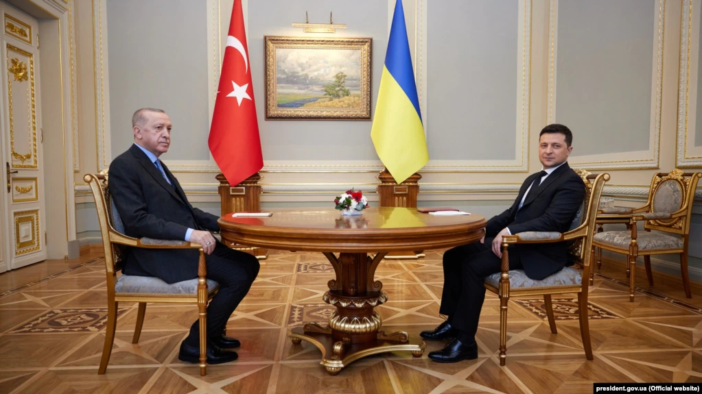
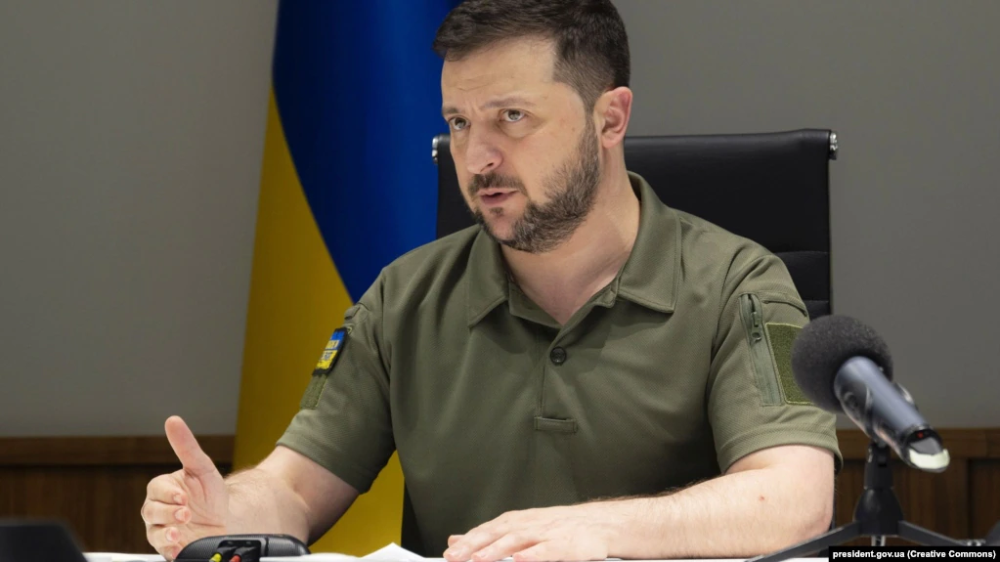
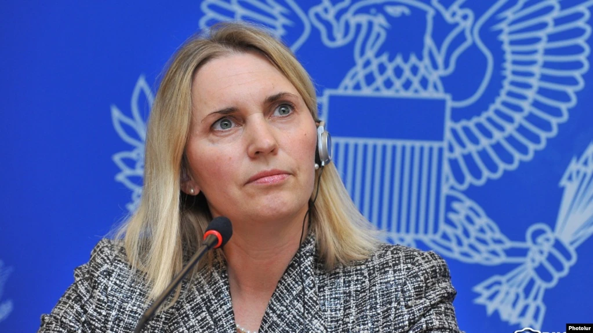
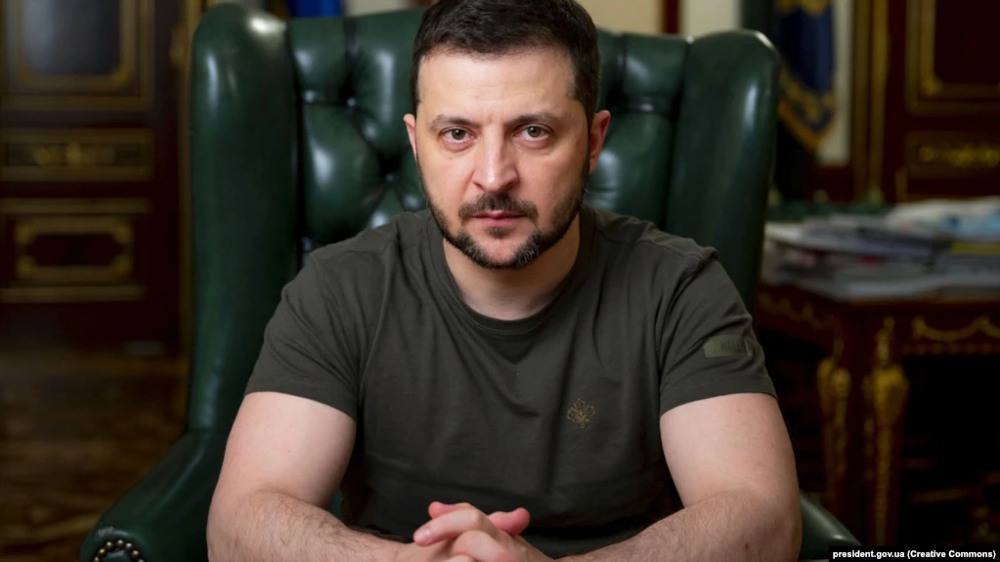

Новини тижня
-
Туреччина сьогодні проведе перемовини щодо вступу в ЄС, говоритимуть і про Україну
Туреччина та Євросоюз проведуть перемовини на високому рівні, на яких йтиметься зокрема про перспективи вступу країни в ЄС та спільні зусилля для негайного припинення війни рф проти України.

«У ході зустрічей (в рамках політичного діалогу високого рівня - ред.) йтиметься про перспективи вступу Туреччини в ЄС, відносин між Туреччиною та ЄС, а також регіональні та міжнародні питання», - йдеться у заяві міністерства.
Турецьку делегацію очолить заступник міністра закордонних справ та директором у справах ЄС Фарук Каймакчи та заступник міністра Седат Онал, делегацією ЄС - заступник генерального секретаря Європейської служби зовнішньої діяльності Енріке Мора та виконувач обов'язків генерального директора у справах сусідства та переговорів з питань розширення ЄС Європейської комісії Мачей Поповські.
Як повідомляє Hurriyet Daily News, на переговорах, зокрема, йтиметься про російське вторгнення в Україну та спільні зусилля для його негайного припинення. Сторони також говоритимуть про ситуацію у Сирії та Лівії.
Нагадаємо, Туреччина є країною-кандидаткою на вступ до ЄС з 1999 року. Переговори, які почалися у 2005 році, були зупинені через політичні розбіжності та критику з боку Брюсселя щодо порушення в Туреччині прав людини та принципів демократії.
Посилання на оригінальну новину -
З Ердоганом обговорили оборонну співпрацю і способи розблокування портів – Зеленський
Президент України Володимир Зеленський обговорив з турецьким колегою Реджепом Тайїпом Ердоганом.
«Обговорили створені агресором загрози продовольчій безпеці, шляхи розблокування українських портів та взаємодію в безпековій сфері. Були одностайні щодо необхідності відновлення миру. Цінуємо сприяння Туреччини у цьому процесі», – написав він у твіттері.
У своєму відеозвернені Зеленський повідомив, що також обговорив з Ердоганом подальшу оборонну співпрацю.
Cьогодні також повідомлялося про розмову Ердогана з президентом Росії Володимиром Путіним. Ердоган заявив, що Туреччина готова організувати у Стамбулі зустріч між Росією, Україною та ООН, а також взяти участь у можливій наглядовій місії в Україні, якщо Москва та Київ досягнуть відповідної угоди.
У березні 2022 року в Туреччині відбулася зустріч представників Росії та України. Після цього переговорний процес відбувався у відеоформаті на рівні робочих підгруп.
Посилання на оригінальну новину -
Зеленський: Європі в будь-якому разі доведеться відмовитися від російської нафти
За його словами, чим раніше це станеться, тим вигідніше буде самій Європі
Президент України Володимир Зеленський вважає, що Європі в будь-якому разі доведеться відмовитися від російської нафти.
«Вважаю, що Європі в будь-якому випадку доведеться відмовитися від російської нафти, бо це про незалежність самих європейців від російської енергетичної зброї. Чим раніше це відбудеться, чим повнішою буде відмова, тим вигідніше буде самій Європі», – сказав він у своєму відеозверненні.
Щодо шостого пакету санкцій, який, як очікується, передбачатиме ембарго на російську нафту, у ЄС не можуть дійти згоди більш як місяць. 29 травня послам ЄС не вдалося дійти консенсусу щодо ембарго.
Посилання на оригінальну новину -
Новий посол США прибула до Києва і зробила першу заяву щодо України
«Наш першочерговий пріоритет – допомогти Україні захиститися», – каже посол
Новий посол США в Україні Бріджит Брінк прибула до Києва 29 травня, про це повідомляє посольство США в Україні.
«Посол Брінк була призначена президентом Байденом послом США в Україні 25 квітня 2022 року, затверджена одноголосно Сенатом США 18 травня 2022 року і прибула до Києва 29 травня 2022 року», – йдеться в біографії Брінк на сайті посольства США в Україні.
Бріджит Брінк наголосила, що першочерговий пріоритет США – допомогти Україні захиститися.
«Наш першочерговий пріоритет – допомогти Україні захиститися. У цей День пам’яті я вшанувала тих, хто загинув, захищаючи свою країну, вручила вірчі грамоти в @MFA_Ukraine та розпочала обговорення того, як ми можемо підтримати Україну», – написала посол в твіттері.
Посилання на оригінальну новину -
У Раді кажуть, що кандидатур на посаду омбудсмена «офіційно не було»
Людмила Денісова була призначена Уповноваженою Верховної Ради з прав людини 15 березня 2018 року
Станом на 30 травня Верховній Раді офіційно не пропонувалися жодні можливі кандидатури на посаду Уповноваженого Верховної Ради з прав людини. Про це у коментарі Радіо Свобода заявила заступниця профільного парламентського комітету з питань прав людини, «слуга народу» Неллі Яковлєва.
«Офіційно кандидатур на заміну запропоновано не було», – зазначила вона.
Водночас, за інформацією обізнаного із ситуацією співрозмовника Радіо Свобода, неофіційно замість Людмили Денісової на посаді омбудсмена монобільшість хотіла би бачити депутата від фракції «Слуга народу» 31-річного Олександра Качуру або нинішню уповноважену Президента з питань забезпечення прав захисників України 41-річну Альону Вербицьку.
«Але є проблеми з віковим цензом», – уточнив співрозмовник Радіо Свобода, маючи на увазі Качуру.
Посилання на оригінальну новину